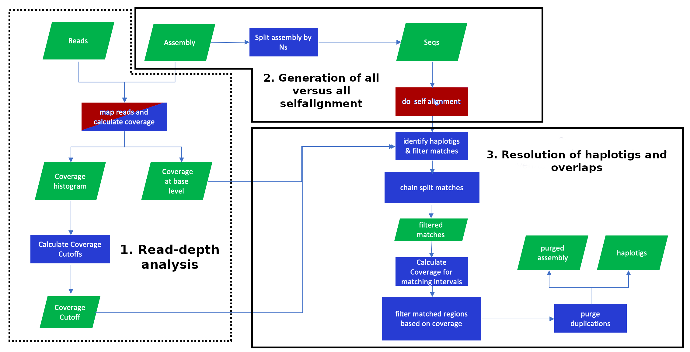
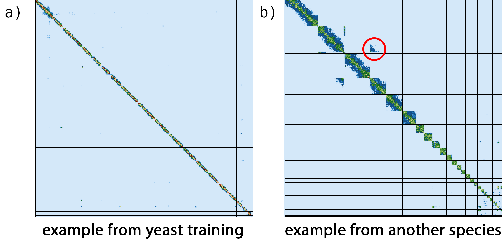

This tutorial is not in its final state. The content may change a lot in the next months.
Because of this status, it is also not listed in the topic pages.
Advances in sequencing technologies over the last few decades have revolutionised the field of genomics, allowing for a reduction in both the time and resources required to de novo genome assembly. Until recently, second-generation sequencing technologies (also known as Next Generation Sequencing or NGS) allowed to produce highly accurate but short (up to 800bp), whose extension was not long enough to cope with the difficulties associated with repetitive regions. Today, so-called third-generation sequencing (TGS) technologies, usually known as single-molecule real-time (SMRT) sequencing, have become dominant in de novo assembly of large genomes. TGS can use native DNA without amplication, reducing sequencing error and bias (Hon et al. 2020, Giani et al. 2020). Very recently, Pacific Biosciences introducedHigh-Fidelity (HiFi) sequencing, which produces reads 10-20 kpb in length with a minimum accuracy of 99% (Q20). In this tutorial you will use HiFi reads in combination with data from additional sequencing technologies to generate a high-quality reference genome assembly.
Deciphering the structural organisation of complex vertebrate genomes is currently one of the most challenges in genomics (Frenkel et al. 2012). Despite the significant progress made in recent years, a key question remains: what combination of data and tools can produce the highest quality assembly? In order to adequately answer it, it is necessary to analyse two of the main factors that determine the difficulty of genome assembly processes: repetitive content and heterozigosity.
Repetitive elements can be grouped into two categories: interspersed repeats, such as transposable elements (TE) that occur at multiple loci throughout the genome, and tandem repeats (TR), that occur at a single locus (Tørresen et al. 2019). Repetitive elements are an important component of eukariotyc genomes, constituting over a third of the genome in the case of mammals (Sotero-Caio et al. 2017, Chalopin et al. 2015). In the case of tamdem repeats, various estimates suggest that they are present in at least one third of human protein sequences (Marcotte et al. 1999). TE content is among the main factors contributing to the lack of continuity in the reconstruction of genomes, especially in the case of large ones, as its content is highly correlated with genome size (Sotero-Caio et al. 2017). On the other hand, TR usually lead to local genome assembly collapse, especially when their length is close to that of the reads (Tørresen et al. 2019).
Heterozygosity is also an important factor in genome assembly. Haplotype phasing, that is, the identification of alleles that are co-located on the same chromosome, has become a fundamental problem in heterozygous and polyploid genome assemblies (Zhang et al. 2020). When there’s not a reference sequence available, the state-of-the–art strategy consist in constructing a string graph with vertexes representing reads and edges representing consistent overlaps. In this kind of graph, after transitive reduction, heterozigous alleles in the string graph are represented by bubbles. When combined with Hi-C data, this approach allows complete diploid reconstruction (Angel et al. 2018, Zhang et al. 2020, Dida and Yi 2021).
The G10K consortium launched the Vertebrate Genomes Project (VGP), whose goal is generating high-quality, near-error-free, gap-free, chromosome-level, haplotype-phased, annotated reference genome assembly for each of the vertebrate species (Rhie et al. 2021). Thhis tutorial will guide you step by step to assemble a high-quality referece genome by using the VGP assembly pipeline.
The figure 1 represents the VGP assembly pipeline.
Figure 1: VPG Pipeline 2.0
The tutorial is structured in four main sections:
Genome profile analysis
HiFi phased assembly with Hifiasm
Hybrid scaffolding based using Bionano data
Hi-C scaffolding
Run the VGP workflows automatically
The pipeline proposed in this training is an adaption of the current workflow versions, whose purpuse is to explain each of the stages in with VGP assembly pipeline is structured. If you desire to run the state-of-art VGP pipelines, just follow the following instructions:
hands_on Hands-on: Run workflow
Dowload the worflow files (whose extesion is ga) from this GitHub repository.
Click on Workflow on the top menu bar of Galaxy. You will see a list of all your workflows.
Click on the upload icon galaxy-upload at the top-right of the screen.
Figure 2: Import workflow from a file or URL.
Provide your workflow:
Option 1: Upload the workflow file in the box labelled “Archived Workflow File”
Option 2: Paste the URL of the workflow into the box labelled “Archived Workflow URL”
Click the import workflow button.
comment Comments
The Galaxy workflows include additional steps (e.g. parse parameter value) required for running it automatically, but which are not necessary when we run the pipeline step by step manually.
Get data
To reduce compute times, we will use samples from the yeast Saccharomyces cerevisiae, one of the most intensively studied eukaryotic model organisms in molecular and cell biology. Yeast can be haploid or diploid, depending the stage of its life cycle. Both cell types are stable and can reproduce asexually by mitosis.
The VGP assembly pipeline uses data generated by a variery of technologies, including PacBio HiFi reads, Bionano optical maps, and Hi-C chromatin interaction maps.
Now we can start with the pipeline. The first step is to get the datasets from Zenodo:
From Rules menu select Add / Modify Column Definitions
Click Add Definition button and select List Identifier(s): column A
Click Add Definition button and select URL: column B
Click Add Definition button and select Type: column C
Clich Add Definition button and select Group Tag: column D
Clich Add Definition button and select Collection Name: column E
Click Apply and press Upload
comment Background on PacBio HiFi reads
PacBio HiFi reads rely on the Single Molecule Real-Time (SMRT) sequencing technology. SMRT is based on real-time imaging of fluorescently tagged nucleotides as they are added to a newly synthesized DNA strand. HiFi further combine multiple subreads from the same circular template to produce one highly accurate consensus sequence (fig. 3). This technology allows to generate long-read sequencing data with read lengths in the range of 10-25 kb and minimum read consensus accuracy greater than 99% (Q20).
Figure 3: PacBio HiFi sequencing. Adapted from Wenger et al., 2019
HiFi reads preprocessing with Cutadapt
Once we have retrieved the data, we need trimming residual adaptor sequences from the PacBio HiFi reads, in order remove the reads that could interfere with the assembly process.
hands_on Hands-on: Primer removal
CutadaptTool: toolshed.g2.bx.psu.edu/repos/lparsons/cutadapt/cutadapt/3.4 with the following parameters:
param-repeat“Insert 5’ or 3’ (Anywhere) Adapters”
“Source”: Enter custom sequence
“Enter custom 5’ or 3’ adapter name”: First adapter
“Enter custom 5’ or 3’ adapter sequence”: ATCTCTCTCAACAACAACAACGGAGGAGGAGGAAAAGAGAGAGAT
param-repeat“Insert 5’ or 3’ (Anywhere) Adapters”
“Source”: Enter custom sequence
“Enter custom 5’ or 3’ adapter name”: Second adapter
“Enter custom 5’ or 3’ adapter sequence”: ATCTCTCTCTTTTCCTCCTCCTCCGTTGTTGTTGTTGAGAGAGAT
In “Adapter Options”:
“Match times”: 3
“Maximum error rate”: 0.1
“Minimum overlap length”: 35
“Look for adapters in the reverse complement”: True
In “Filter Options”:
“Discard Trimmed Reads”: Yes
Rename the output file as HiFi_collection (trim). To rename an output file, click on the result, and then click again on the title to change it. After closing, you may need to refresh the history to see the name change.
Genome profile analysis
Before starting a de novo genome assembly project, it useful to collect metrics on the properties of the genome under consideration, such as the expected genome size. Traditionally DNA flow citometry was considered the golden standard for estimating the genome size. Nowadays experimental methods have been replaced by computational approaches Wang et al. 2020. One of the widely used genome profilling methods is based on the analysis of k-mer frequencies. It allows to provide information not only about the genomic complexity, such as the genome size, levels of heterozygosity and repeat content, but also about the data quality.
details K-mer size, sequencing coverage and genome size
K-mers are unique substrings of length k contained within a DNA sequence. For example, the DNA sequence TCGATCACA can be decomposed into six unique k-mers that have five bases long: TCGAT, CGATC, GATCA, ATCAC and TCACA. A sequence of length L will have L-k+1 k-mers. On the other hand, the number of possible k-mers can be calculated as nk, where n is number of possible monomers and k is the k-mer size.
Bases
K-mer size
Total possible k-mers
4
1
4
4
2
16
4
3
64
4
4
256
4
…
…
4
10
1.048.576
Thus, the k-mer size is a key parameter, which must be large enough to map uniquely to the genome, but not too large, since it can lead to wasting computational resources. In the case of the human genome, k-mers of 31 bases in length lead to 96.96% of unique k-mers.
Each unique k-mer can be assigned a value for coverage based on the number of times it occurs in a sequence, whose distribution will approximate a Poisson distribution, with the peak corresponding to the average genome sequencing depth. From the genome coverage, the genome size can be easily computed.
In section we will use two basic tools to computationally estimate the genome features: Meryl and GenomeScope.
Generation of k-mer spectra with Meryl
Meryl will allow us to generate the k-mer profile by decomposing the sequencing data into k-lenght substrings, counting the ocurrence of each k-mer and determining its frequency. The original version of Meryl was developed for the Celera Assembler. The current Meryl version compises three main modules: one for generating k-mer databases, one for filtering and combining databases, and one for searching databases. K-mers are stored in lexicographical order in the database, similar to words in a dictionary (Rhie et al. 2020).
commentk-mer size estimation
Given an estimated genome size (G) and a tolerable collision rate (p), an appropriate k can be computed as k = log4 (G(1 − p)/p).
hands_on Hands-on: Generate k-mers count distribution
MerylTool: toolshed.g2.bx.psu.edu/repos/iuc/meryl/meryl/1.3+galaxy2 with the following parameters:
“Operation type selector”: Count operations
“Count operations”: Count: count the ocurrences of canonical *k*-mers
We used 21 as k-mer size, as this length has demonstrated to be sufficiently long that most k-mers are not repetitive and is short enough to be more robust to sequencing errors. For very large (haploid size > 10 Gb) and/or very repetitive genomes, larger k-mer length is recommended to increase the number of unique k-mers.
Rename it Collection meryldb
MerylTool: toolshed.g2.bx.psu.edu/repos/iuc/meryl/meryl/1.3+galaxy1 with the following parameters:
“Operation type selector”: Operations on sets of *k*-mers
“Operations on sets of *k-mers”*: Union-sum: return *k*-mers that occur in any input, set the count to the sum of the counts
param-file“Input meryldb”: Collection meryldb
Rename it as Merged meryldb
MerylTool: toolshed.g2.bx.psu.edu/repos/iuc/meryl/meryl/1.3+galaxy0 with the following parameters:
“Operation type selector”: Generate histogram dataset
param-file“Input meryldb”: Merged meryldb
Finally, rename it as Meryldb histogram.
Genome profiling with GenomeScope2
The next step is to infer the genome properties from the k-mer histogram generated by Meryl, for which we willl use GenomeScope2. Genomescope2 relies on a nonlinear least-squares optimization to fit a mixture of negative binomial distributions, generating estimated values for genome size, repetitiveness, and heterozygosity rates (Ranallo-Benavidez et al. 2020).
hands_on Hands-on: Estimate genome properties
GenomeScopeTool: toolshed.g2.bx.psu.edu/repos/iuc/genomescope/genomescope/2.0 with the following parameters:
“k-mer length used to calculate *k-mer spectra”*: 21
In “Output options”: mark Summary of the analysis
In “Advanced options”:
“Create testing.tsv file with model parameters”: true
Genomescope will generate six outputs:
Plots
Linear plot: k-mer spectra and fitted models: frequency (y-axis) versus coverage.
Log plot: logarithmic transformation of the previous plot.
Transformed linear plot: k-mer spectra and fitted models: frequency times coverage (y-axis) versus coverage (x-axis). It allows to increases the heights of higher-order peaks, overcoming the effect of high heterozygosity.
Transformed log plot: logarithmic transformation of the previous plot.
Model: this file includes a detailed report about the model fitting.
Summary: it includes the properties infered from the model, such as genome haploid length and the percentage of heterozygosity.
Now, let’s analyze the k-mer profiles, fitted models and estimated parameters:
Figure 4: Genomescope2 plot
This distribution is the result of the Poisson process underlying the generation of sequencing reads. As we can see, there is an unique peak centered around 28x, the modal k-mer coverage. The absence of a secondary peak at half diploid coverage is suggestive of the haploid nature of this genome, but could generally result also from very low heterozygosity. Low frequency k-mers are the result of sequencing errors.
Before proceeding to the next section, we need to carry out some operations on the output generated by GenomeScope2. The goal is to extract some parameters which at a later stage will be used by purge_dups (Guan et al. 2019). The first relevant parameter is the estimated genome size.
hands_on Hands-on: Get estimated genome size
ReplaceTool: toolshed.g2.bx.psu.edu/repos/bgruening/text_processing/tp_find_and_replace/1.1.3 with the following parameters:
param-file“File to process”: summary (output of GenomeScopetool)
“Find pattern”: bp
“Replace all occurences of the pattern”: Yes
“Find and Replace text in”: entire line
ReplaceTool: toolshed.g2.bx.psu.edu/repos/bgruening/text_processing/tp_find_and_replace/1.1.3 with the following parameters:
param-file“File to process”: output file of Replacetool)
“Find pattern”: ,
“Replace all occurences of the pattern”: Yes
“Find and Replace text in”: entire line
Search in textfiles (grep)Tool: toolshed.g2.bx.psu.edu/repos/bgruening/text_processing/tp_grep_tool/1.1.1 with the following parameters:
param-file“Select lines from”: output file of the previous step.
“Type of regex”: Basic
“Regular Expression”: Haploid
Convert delimiters to TABTool: Convert characters1 with the following parameters:
param-file“in Dataset”: output of Search in textfilestool
Advanced CutTool: toolshed.g2.bx.psu.edu/repos/bgruening/text_processing/tp_cut_tool/1.1.0 with the following parameters:
param-file“File to cut”: output of Convert delimiters to TABtool
“Cut by”: fields
“List of Fields”: Column: 5
Rename the output as Estimated genome size.
question Questions
What is the estimated genome size?
solution Solution
The estimated genome size is 12664060 bp.
Now let’s parse the upper bound for the read depth estimation parameter.
hands_on Hands-on: Get maximum read depth
Compute an expression on every rowTool: toolshed.g2.bx.psu.edu/repos/devteam/column_maker/Add_a_column1/1.6 with the following parameters:
“Add expression”: 1.5*c3
param-file“as a new column to”: model_params (output of GenomeScopetool)
“Round result?”: Yes
“Input has a header line with column names?”: No
Compute an expression on every rowTool: toolshed.g2.bx.psu.edu/repos/devteam/column_maker/Add_a_column1/1.6 with the following parameters:
“Add expression”: 3*c7
param-file“as a new column to”: output of the previous step.
“Round result?”: Yes
“Input has a header line with column names?”: No
Rename it as Parsing temporal output
Advanced CutTool: toolshed.g2.bx.psu.edu/repos/bgruening/text_processing/tp_cut_tool/1.1.0 with the following parameters:
param-file“File to cut”: Parsing temporal output
“Cut by”: fields
“List of Fields”: Column 8
Rename the output as Maximum depth
question Questions
What is the estimated maximum depth?
solution Solution
The estimated maximum depth is 63 reads.
Finally, let’s parse the transition between haploid and diploid coverage depths parameter.
hands_on Hands-on: Get transition parameter
Advanced CutTool: toolshed.g2.bx.psu.edu/repos/bgruening/text_processing/tp_cut_tool/1.1.0 with the following parameters:
param-file“File to cut”: Parsing temporal output
“Cut by”: fields
“List of Fields”: Column 7
Rename the output as Transition parameter
question Questions
What is the estimated transition parameter?
solution Solution
The estimated transition parameter is 21 reads.
HiFi phased assembly with hifiasm
Once we have done genome profiling stage, we can start the genome assembly with hifiasm, a fast open-source de novo assembler specifically developed for PacBio HiFi reads.
Genome assembly with hifiasm
One of the key advantages of hifiasm is that it allows to resolve near-identical, but not exacly identical sequences, such as repeats and segmental duplications (Cheng et al. 2021).
comment Hifiasm algorithm details
By default hifiasm performs three rounds of haplotype-aware error correction to correct sequence errors but keeping heterozygous alleles. A position on the target read to be corrected is considered informative if there are two different nucleotides at that position in the alignment, and each allele is supported by at least tree reads.
Figure 5: Hifiasm algorithm overview. Orange and blue bars represent the reads with heterozygous alleles carrying local phasing information, while green bars come from the homozygous regions without any heterozygous alleles.
Then, hifiasm builds a phased assembly string graph with local phasing information from the corrected reads. Only the reads coming from the same haplotype are connected in the phased assembly graph. After transitive reduction, a pair of heterozygous alleles is represented by a bubble in the string graph. If there is no additional data, hifiasm arbitrarily selects one side of each bubble and outputs a primary assembly. In the case of a heterozygous genome, the primary assembly generated at this step may still retain haplotigs from the alternate allele.
hands_on Hands-on: Phased assembly with hifiasm
HifiasmTool: toolshed.g2.bx.psu.edu/repos/bgruening/hifiasm/hifiasm/0.14+galaxy0 with the following parameters:
“Assembly mode”: Standard
param-file“Input reads”: HiFi_collection (trim) (output of Cutadapttool)
Rename the Hi-C hap1 contig graph as Primary contigs graph and add a #primary tag
Rename the Hi-C hap2 contig graph as Alternate contigs graph and add a #alternate tag
Hifiasm generates four outputs in GFA format; this format is designed to represent genome variation, splice graphs in genes, and even overlaps between reads.
Convert GFA format to FASTA with GFA to FASTA
We have obtained the fully phased contig graphs of the primary and alternate haplotypes, but the output format of hifiasm is not adequate for the subsequent steps, so we will convert them into fasta format.
hands_on Hands-on: convert GFA to FASTA
GFA to FASTATool: toolshed.g2.bx.psu.edu/repos/iuc/gfa_to_fa/gfa_to_fa/0.1.2 with the following parameters:
param-files“Input GFA file”: select Primary contig graph and the Alternate contigs graph datasets
Rename the outputs as Primary contigs FASTA and Alternate contigs FASTA
Initial assembly evaluation
The VGP assembly pipeline contains several built-in QC steps, including QUAST, BUSCO, Merqury and Pretext. QUAST will generate summary statistics, BUSCO will search for universal single-copy ortholog genes, Merqury will evaluate assembly copy-numbers using k-mers, and Pretext will be used to evaluate the assembly contiguity.
comment QUAST statistics
QUAST will provide us with the following statistics:
No. of contigs: The total number of contigs in the assembly.
Largest contig: The length of the largest contig in the assembly.
Total length: The total number of bases in the assembly.
Nx: The largest contig length, L, such that using contigs of length >= L accounts for at least x% of the bases of the assembly.
NGx: The contig length such that using equal or longer length contigs produces x% of the length of the reference genome, rather than x% of the assembly length.
GC content: the percentage of nitrogenous bases which are either guanine or cytosine.
hands_on Hands-on: assembly evaluation with QUAST
QuastTool: toolshed.g2.bx.psu.edu/repos/iuc/quast/quast/5.0.2+galaxy1 with the following parameters:
“Use customized names for the input files?”: Yes, specify custom names
In “1. Contigs/scaffolds”:
param-file“Contigs/scaffolds file”: Primary contigs FASTA
“Name”: Primary assembly
Click in “Insert Contigs/scaffolds”
In “2. Contigs/scaffolds”:
param-file“Contigs/scaffolds file”: Alternate contigs FASTA
“Estimated reference genome size (in bp) for computing NGx statistics”: 12664060 (previously estimated)
“Type of organism”: Eukaryote: use of GeneMark-ES for gene finding, Barrnap for ribosomal RNA genes prediction, BUSCO for conserved orthologs finding (--eukaryote)
“Is genome large (>100Mpb)?”: No
comment Comment
Remember that for this training we are using S. cerevisiae, a reduced genome. In the case of assembling a vertebrate genome, you must select yes in the previous option.
Rename the HTML report as QUAST initial report
Let’s have a look at the report generated by QUAST.
Figure 6: QUAST initial report.
According with the plot, the primary assembly includes 40 contigs, whose accumulative length is around 12 Mbp. On the other hand, the accumulative length of the secondary assembly is much smaller, despite including more than 120 contigs. This is expected, since we are working with an haploid organism.
question Questions
What is the longest contig in the primary assembly? And in the alternate one?
What is the N50 of the primary assembly?
Which percentage of reads mapped to each assembly?
solution Solution
The longest contig in the primary assembly is 914.549 bp, and 15.845 bp in the alternate assembly.
The N50 of the primary assembly is 425.706 bp.
According the report, 100% of reads mapped to the primary assembly, but only around 57% mapped to the alternate assembly.
Next, we will use BUSCO, which will allow us to quantitative assessment of the completeness of a genome assembly in terms of expected gene content. It relies in the analysis of genes that should be present only once in a complete assembly or gene set, while allowing for rare gene duplications or losses (Simão et al. 2015).
hands_on Hands-on: assessing assembly completness with BUSCO
BuscoTool: toolshed.g2.bx.psu.edu/repos/iuc/busco/busco/5.0.0+galaxy0 with the following parameters:
param-files“Sequences to analyse”: Primary contigs FASTA and Alternate contigs FASTA
“Mode”: Genome assemblies (DNA)
“Use Augustus instead of Metaeuk”: Use Metaeuk
“Auto-detect or select lineage?”: Select lineage
“Lineage”: Saccharomycetes
“Which outputs should be generated”: short summary text
comment Comment
Remember to modify the lineage option if you are working with vertebrate genomes.
Rename the summary as BUSCO initial report
BUSCO generates two outputs, a tabular file which contains the complete results with scores, descriptions, lengths and coordinates of matches (fig. 8), and a short summary.
Figure 7: BUSCO full table
As we can see in the report, the results are simplified into four categories: complete and single-copy, complete and duplicated, fragmented and Missing BUSCOs.
question Questions
How many complete BUSCO genes have been identified?
How many BUSCOs gene are absent?
solution Solution
According the report, our assembly contains the complete sequence of 2121 complete BUSCO genes.
8 BUSCO genes are missing.
Despite BUSCO is robust for species that have been widely studied, it can be inaccurate when the newly assembled genome belong to taxas that are not well represented in the OrtologDB. Merqury provides a complementary approach for assessing genome assembly quality metrics in a reference-free manner via k-mer copy number analysis.
hands_on Hands-on: k-mer based evaluation with Merqury
MerquryTool: toolshed.g2.bx.psu.edu/repos/iuc/merqury/merqury/1.3 with the following parameters:
param-file“First genome assembly”: Primary contigs FASTA
param-file“Second genome assembly”: Alternate contigs FASTA
By default, Merqury generates three collections as output: stats, plots and QV stats.
The copy number spectum plot, known as spectra-cn plot (fig. 9a), tracks the multiplicity of each k-mer found in the Hi-Fi read set and colors it by the number of times it is found in a given assembly . Merqury connects the midpoint of each histogram bin with a line, giving the illusion of a smooth curve. Remember that the histogram dataset was generated previously by Meryl.
Figure 8: Merqury CN plot
The black region in the left side corresponds to k-mers found only in the read set; it is usually indicative of sequencing error in the read set, although also can be indicative of missing sequences in the assembly. The read area represents one-copy k-mers in the genome, while blue area represents two-copy k-mers originating. from homozygous sequence or haplotype-specific duplications. From that figure we can state that the sequencing coverage is around 30x.
The figure 1b corresponds to the assembly spectrum plot. This plot is helpful for measuring diploid assembly completeness as it shows the fraction of k-mers specific to both the primary and alternate assemblies (Rhie et al. 2020).
Post-assembly processing
An ideal haploid representation would consist of one allelic copy of all heterozygous regions in the two haplomes, as well as all hemizygous regions from both haplomes (Guan et al. 2019). However, in high heterozygous genomes, assembly algorithms are frequently not able identify the highly divergent allelic sequences, resulting in the assembly of those regions as separate contigs, which can lead to issues in downstream analysis, such as scaffolding, gene annotation and read mapping in general (Small et al. 2007, Guan et al. 2019, Roach et al. 2018). In order to solve this problem, we are going to use purge_dups; this tool will allow us to identify and reassign allelic contigs.
Remove haplotypic duplication with purge_dups
This stage can consist in three substages: coverage related calculation, generation of all versus all self-alignment and resolution of haplotigs and overlaps (fig. 10).
Figure 9: Purge_dups pipeline. Adapted from github.com/dfguan/purge_dups.
Read-depth analysis
Initially we need to collapse the collection into a single dataset.
hands_on Hands-on: Collapse the collection
Collapse CollectionTool: toolshed.g2.bx.psu.edu/repos/nml/collapse_collections/collapse_dataset/4.2 with the following parameters:
param-collection“Collection of files to collapse into single dataset”:HiFi_collection (trim)
Rename de output as HiFi reads collapsed
Now, we will map the reads against the primary assembly by using Minimap2 (Li 2018), an alignment program designed to map long sequences.
hands_on Hands-on: Map the reads to contigs with Minimap2
Map with minimap2Tool: toolshed.g2.bx.psu.edu/repos/iuc/minimap2/minimap2/2.17+galaxy4 with the following parameters:
“Will you select a reference genome from your history or use a built-in index?”: Use a genome from history and build index
param-file“Use the following dataset as the reference sequence”: Primary contigs FASTA
“Select a profile of preset options”: Long assembly to reference mapping (-k19 -w19 -A1 -B19 -O39,81 -E3,1 -s200 -z200 --min-occ-floor=100). Typically, the alignment will not extend to regions with 5% or higher sequence divergence. Only use this preset if the average divergence is far below 5%. (asm5)
In “Set advanced output options”:
“Select an output format”: paf
Rename the output as Reads mapped to contigs
Finally, we will use the Reads mapped to contigs PAF file for calculating some statistics required in a later stage. In this step, purge_dups initially produces a read-depth histogram from base-level coverages. This information is used for estimating the coverage cutoffs, taking on the fact that for collapsed haplotype contigs the reads from both alleles will map, whereas if the alleles have assembled as separate contigs the reads will be split over the two contigs, resulting in half the read-depth (Roach et al. 2018).
hands_on Hands-on: Read-depth analsys
purge_dupsTool: toolshed.g2.bx.psu.edu/repos/iuc/purge_dups/purge_dups/1.2.5+galaxy3 with the following parameters:
“Function mode”: Calculate coverage cutoff, base-level read depth and create read depth histogram for PacBio data (calcuts+pbcstats)
param-file“PAF input file”: Reads mapped to contigs
In “Calcuts options”:
“Upper bound for read depth”: 63 (the previously estimated maximum depth)
“Ploidity”: Haploid
comment Comment
In case you are working with a diploid organism, you should select diploid in the ploidy option.
Rename the outputs as ` PBCSTAT base coverage primary, Histogram plot primary and Calcuts cutoff primary`.
Purge_dups generates three outputs:
PBCSTAT base coverage: it contains the base-level coverage information.
Calcuts-cutoff: it includes the thresholds calculated by purge_dups.
Histagram plot.
As we can see in the histogram plot, the read depth distribution follows a simetric and unimodal distribution (fig. 11). This result is expected, since we are assemblying an haploid genome.
Figure 10: purge_dups histogram plot
details Expected results in diploid organisms
For diploid organisms, it is frequent to observe bimodal distributions when allelic sequences from the same genomic region are assembled separately.
Figure 11: purge_dups histogram generated in diploid genomes.
Generation of all versus all self-alignmnet
Now, we will segment the draft assembly into contigs by cutting at blocks of ‘N’s, and use minimap2 to generate an all by all self-alignment.
hands_on Hands-on: purge_dups pipeline
purge_dupsTool: toolshed.g2.bx.psu.edu/repos/iuc/purge_dups/purge_dups/1.2.5+galaxy2 with the following parameters:
“Function mode”: split assembly FASTA file by 'N's (split_fa)
param-file“Assembly FASTA file”: Primary contigs FASTA
Rename the output as Split FASTA
Map with minimap2Tool: toolshed.g2.bx.psu.edu/repos/iuc/minimap2/minimap2/2.17+galaxy4 with the following parameters:
“Will you select a reference genome from your history or use a built-in index?”: Use a genome from history and build index
param-file“Use the following dataset as the reference sequence”: Split FASTA
“Single or Paired-end reads”: Single
param-file“Select fastq dataset”: Split FASTA
“Select a profile of preset options”: Construct a self-homology map - use the same genome as query and reference (-DP -k19 -w 19 -m200) (self-homology)
In “Set advanced output options”:
“Select an output format”: PAF
Rename the output as Self-homology map primary
Resolution of haplotigs and overlaps
During the final step of the purge_dups pipeline, it will use the self alignments and the cutoffs for identifying the haplotypic duplications.
comment Purge_dups algorithm details
In order to identify the haplotypic duplications, purge_dups uses the base-level coverage information to flag the contigs according the following criteria:
If more than 80% bases of a contig are above the high read depth cutoff or below the noise cutoff, it is discarted.
If more than 80% bases are in the diploid depth interval, it is labelled as a primary contig, otherwise it is considered further as a possible haplotig.
Contigs that were flagged for further analysis according to read-depth are then evaluated to attempt to identify synteny with its allelic companion contig. In this step, purge_dups uses the information contained in the self alignments:
If the alignment score is larger than the cutoff s (default 70), the contig is marked for reassignment as haplotig. Contigs marked for reassignment with a maximum match score greater than the cutoff m (default 200) are further flagged as repetitive regions.
Otherwise contigs are considered as a candidate primary contig.
Once all matches associated with haplotigs have been removed from the self-alignment set, purge_dups ties consistent matches between the remaining candidates to find collinear matches, filtering all the matches whose score is less than the minimum chaining score l.
Finally, purge-dups calculates the average coverage of the matching intervals for each overlap, and mark an unambiguous overlap as heterozygous when the average coverage on both contigs is less than the read-depth cutoff, removing the sequences corresponding to the matching interval in the shorter contig.
hands_on Hands-on: Resolution of haplotigs and overlaps
purge_dupsTool: toolshed.g2.bx.psu.edu/repos/iuc/purge_dups/purge_dups/1.2.5+galaxy5 with the following parameters:
“Select the purge_dups function”: Purge haplotigs and overlaps for an assembly (purge_dups)
purge_dupsTool: toolshed.g2.bx.psu.edu/repos/iuc/purge_dups/purge_dups/1.2.5+galaxy2 with the following parameters:
“Select the purge_dups function”: Obtain sequences after purging (get_seqs)
param-file“Assembly FASTA file”: Primary contigs FASTA
param-file“BED input file”: purge_dups BED (output of the previous step)
Rename the output get_seq purged sequences as Primary contigs purged and the get_seq haplotype file as Alternate haplotype contigs.
Process the alternative assembly
Now we should repeat the same procedure with the alternate contigs generated by hifiasm. In that case, we should start by merging the merging the Alternate haplotype contigs generated in the previos step and the Alternate contigs FASTA file.
hands_on Hands-on: Merge the purged sequences and the Alternate contigs
Concatenate datasetsTool: cat1 with the following parameters:
param-file“Concatenate Dataset”: Alternate contigs FASTA
In “Dataset”:
param-repeat“Insert Dataset”
param-file“Select”: Purged sequences
comment Comment
Remember that the Purged sequences file contains those contigs that were considered to be haplotypic duplications of the primary contigs.
Rename the output as Alternate contigs full
Once we have merged the files, we should run the pipeline again, but using the Alternate contigs full file as input.
hands_on Hands-on: Process the alternate assembly with purge_dups
Map with minimap2Tool: toolshed.g2.bx.psu.edu/repos/iuc/minimap2/minimap2/2.17+galaxy4 with the following parameters:
“Will you select a reference genome from your history or use a built-in index?”: Use a genome from history and build index
param-file“Use the following dataset as the reference sequence”: Alternate contigs full
“Select a profile of preset options”: Long assembly to reference mapping (-k19 -w19 -A1 -B19 -O39,81 -E3,1 -s200 -z200 --min-occ-floor=100). Typically, the alignment will not extend to regions with 5% or higher sequence divergence. Only use this preset if the average divergence is far below 5%. (asm5)
In “Set advanced output options”:
“Select an output format”: paf
Rename the output as Reads mapped to contigs alternate
purge_dupsTool: toolshed.g2.bx.psu.edu/repos/iuc/purge_dups/purge_dups/1.2.5+galaxy3 with the following parameters:
“Function mode”: Calculate coverage cutoff, base-level read depth and create read depth histogram for PacBio data (calcuts+pbcstats)
param-file“PAF input file”: Reads mapped to contigs alternate
In “Calcuts options”:
“Upper bound for read depth”: 63
“Ploidity”: Haploid
comment Comment
In case you are working with a diploid organism, you should select diploid.
Rename the outputs as ` PBCSTAT base coverage alternate, Histogram plot alternate and Calcuts cutoff alternate`.
purge_dupsTool: toolshed.g2.bx.psu.edu/repos/iuc/purge_dups/purge_dups/1.2.5+galaxy2 with the following parameters:
“Function mode”: split assembly FASTA file by 'N's (split_fa)
param-file“Assembly FASTA file”: Alternate contigs full
Rename the output as Split FASTA alternate
Map with minimap2Tool: toolshed.g2.bx.psu.edu/repos/iuc/minimap2/minimap2/2.17+galaxy4 with the following parameters:
“Will you select a reference genome from your history or use a built-in index?”: Use a genome from history and build index
param-file“Use the following dataset as the reference sequence”: Split FASTA alternate
“Single or Paired-end reads”: Single
param-file“Select fastq dataset”: Split FASTA alternate
“Select a profile of preset options”: Construct a self-homology map - use the same genome as query and reference (-DP -k19 -w 19 -m200) (self-homology)
In “Set advanced output options”:
“Select an output format”: PAF
Rename the output as Self-homology map alternate
purge_dupsTool: toolshed.g2.bx.psu.edu/repos/iuc/purge_dups/purge_dups/1.2.5+galaxy5 with the following parameters:
“Select the purge_dups function”: Purge haplotigs and overlaps for an assembly (purge_dups)
purge_dupsTool: toolshed.g2.bx.psu.edu/repos/iuc/purge_dups/purge_dups/1.2.5+galaxy2 with the following parameters:
“Select the purge_dups function”: Obtain sequences after purging (get_seqs)
param-file“Assembly FASTA file”: Alternate contigs full
param-file“BED input file”: purge_dups BED alternate
Rename the outputs as Alternate contigs purged and Alternate haplotype contigs.
Second round of assembly evaluation
Once we have run purge_dups, we can evaluate assembly again, and compare the results before and after purging. In that case, we will only evaluate the primary assembly.
hands_on Hands-on: assembly evaluation with QUAST
QuastTool: toolshed.g2.bx.psu.edu/repos/iuc/quast/quast/5.0.2+galaxy1 with the following parameters:
“Use customized names for the input files?”: Yes, specify custom names
“Estimated reference genome size (in bp) for computing NGx statistics”: 12664060 (previously estimated)
“Type of organism”: Eukaryote: use of GeneMark-ES for gene finding, Barrnap for ribosomal RNA genes prediction, BUSCO for conserved orthologs finding (--eukaryote)
“Is genome large (>100Mpb)?”: No
Rename the HTML report as QUAST second report
In the figure 13 we can see the accumulative length plot corresponding to the primary assembly after being processed.
Figure 12: QUAST accumutive plot
question Questions
How many contigs include the primary assembly after being processed with purge_dups? And before?
Which percentage of reads mapped to the primary assembly?
solution Solution
The primary assembly includes 37 contigs after being processed. The original assembly included 40 contigs.
According the report, 100% of reads mapped to the primary assembly.
Now, let’s evaluate the assemby with BUSCO.
hands_on Hands-on: assessing assembly completness with BUSCO
BuscoTool: toolshed.g2.bx.psu.edu/repos/iuc/busco/busco/5.0.0+galaxy0 with the following parameters:
param-files“Sequences to analyse”: Primary contigs purged and Alternate contigs purged
“Mode”: Genome assemblies (DNA)
“Use Augustus instead of Metaeuk”: Use Metaeuk
“Auto-detect or select lineage?”: Select lineage
“Lineage”: Saccharomycetes
In “Advanced Options”:
“Which outputs should be generated”: short summary text and summary image
Rename the summary as BUSCO second report
question Questions
How many complete BUSCO genes have been identified?
solution Solution
According the report, the primary assembly contains 2021 complete BUSCO genes.
Hybrid scaffolding
Once we have obtained the primary and alternate assemblies, the next step is to reduce the fragmentation. It will be done by combining the assembled contigs with Bionano optical maps to generate hybrid maps. The resulting contigs will be further clustered basing on Hi-C data.
Hybrid scaffolding based using Bionano data
In this step, the linkage information provided by optical maps is integrated with primary assembly sequences, and the overlaps are used to orient and order the contigs, resolve chimeric joins, and estimate the length of gaps between adjacent contigs. One of the advantage of optical maps is that can easily span genomic regions that are difficult to resolve using DNA sequencing technologies (Savara et al. 2021, Yuan et al. 2020).
comment Background on Bionano optical maps
Bionano technology relies on the isolation of kilobase-long DNA fragments, which are labeled at specific sequence motifs with a fluorescent dye, resulting in a unique fluorescent pattern for each genome. DNA molecules are stretched into nanoscale channels and imaged with a high-resolution camera, allowing to build optical maps that include the physical locations of labels rather than base-level information (Lam et al. 2012, Giani et al. 2020, Savara et al. 2021).
“Estimated reference genome size (in bp) for computing NGx statistics”: 12664060 (previously estimated)
“Type of organism”: Eukaryote (--eukaryote): use of GeneMark-ES for gene finding, Barrnap for ribosomal RNA genes prediction, BUSCO for conserved orthologs finding
In “Genes”:
“Tool for gene prediction”: Don't predict genes
question Questions
How many contigs include the primary assembly after the hybrid scaffolding? And before?
What is the size of the largest contig? And before?
Has increased the N50 after the hybrid scaffolding?
solution Solution
The number of contigs have been reduced from 37 to 20 after the hybrid scaffolding.
The largest contig has 1.506.138 bp. Previously it was 914.549 bp.
N50 has increased from 425.706 up to 926.785.
Hybrid scaffolding based on Hi-C mapping data
Hi-C is a sequencing-based molecular assay designed to identify regions of frequente physical interaction in the genome by measuring the contact frequency between all pairs of loci, allowing to provide an insight into the three-dimensional organisation of a genome (Dixon et al. 2012, Lieberman-Aiden et al. 2009). In this final stage, we will explote the fact that the contact frequency between a pair of loci strongly correlates with the one-dimensional distance between them with the objetive of linking the Bionano scaffolds to a chromosome scale,.
comment Background about Hi-C data
The high-throughput chromosome conformation capture (Hi-C) technology is based on the capture of the chromatin three-dimensional. During Hi-C library preparation, DNA is crosslinked in its 3D conformation. Then, the DNA is digested using restriction enzymes, and the digested ends are filled with biotinylated nucleotides (fig. 14). The biotinylated nucleotides enable the specific purification of the ligation junctions, preverting to sequence DNA molecules that do not contain such junctions and are thus mostly uninformative (Lajoie et al. 2015).
Figure 14: Hi-C protocol. Adapted from Rao et al. 2014
Next, the blunt ends of spatially proximal digested end are ligated. Each DNA fragment is then sequenced from each end of this artificial junction, generating read pairs. This provides contact information that can be used to reconstruct the proximity of genomic sequences belonging to the same chromosome (Giani et al. 2020). Hi-C data are in the form of two-dimensional matrices (contact maps) whose entries quantifiy the intensity of the physical interaction between genome regions.
Pre-processing Hi-C data
Despite Hi-C generated paired-end reads, we need to map each read separately. The reason is that most aligners assume that the distance between the paired-ends reads fits a known distribution, but in Hi-C data, the insert size of the ligation product can vary between one base pair to hundreds of megabases (Lajoie et al. 2015).
hands_on Hands-on: Mapping Hi-C reads
Map with BWA-MEMTool: toolshed.g2.bx.psu.edu/repos/devteam/bwa/bwa_mem/0.7.17.2 with the following parameters:
“Will you select a reference genome from your history or use a built-in index?”: Use a genome from history and build index
param-file“Use the following dataset as the reference sequence”: Primary assembly bionano
“BAM sorting mode”: Sort by read names (i.e., the QNAME field)
Rename the output as BAM reverse
Filter and mergeTool: toolshed.g2.bx.psu.edu/repos/iuc/bellerophon/bellerophon/1.0+galaxy0 with the following parameters:
param-file“First set of reads”: BAM forward
param-file“Second set of reads”: Bam reverse
Rename it as BAM Hi-C reads
Finally, we need to convert the BAM file to BED format, and sorting it.
Generate initial Hi-C contact map
After mapping the Hi-C reads, the next step is to generate an initial Hi-C contact map, which will allow us to compare the Hi-C contact maps before and after using the Hi-C for scaffolding.
comment Biological basis of Hi-C contact maps
Hi-C contact maps reflect the interaction frequency between genomic locus. In order to understand the Hi-C contacts maps, it is necessary to take in account two factors: the higher interaction frequency between loci that reside in the same chromosome (i.e. in cis), and the distance-dependent decay of interaction frequency (Lajoie et al. 2015).
The higher interaction between cis regions can be explained, at least in part, by the territorial organization of chromosomes in interphase (chromosome territories), and in a genome-wide contact map, this pattern appears as blocks of high interaction centered along the diagonal and matching individual chromosomes (fig. 15) (Cremer and Cremer 2010, Lajoie et al. 2015).
Figure 15: Hi-C map
On the other hand, the distance-dependent decay may be due to random movment of the chromosomes, and in the contact map appears as a gradual decrease of the interaction frequency the further away from the diagonal it moves (Lajoie et al. 2015).
hands_on Hands-on: Generate a contact map with PretextMap and Pretext Snapshot
PretextMapTool: toolshed.g2.bx.psu.edu/repos/iuc/pretext_map/pretext_map/0.1.6+galaxy0 with the following parameters:
param-file“Input dataset in SAM or BAM format”: BAM Hi-C reads
“Sort by”: Don't sort
Rename the output as PretextMap output
Pretext SnapshotTool: toolshed.g2.bx.psu.edu/repos/iuc/pretext_snapshot/pretext_snapshot/0.0.3+galaxy0 with the following parameters:
Let’s have a look at the Hi-C contact maps generated by Pretext Snapshot.
Figure 16: Hi-C map generated by Pretext. Full map (a) and Super-Scaffold_100003 (b)
SALSA2 scaffolding
SALSA2 is an open source software that make use of Hi-C to linearly orient and order assembled contigs along entire chromosomes.
comment SALSA2 algoritm overview
Initially SALSA2 uses the physical coverage of Hi-C pairs to identify suspicious regions and break the sequence at the likely point of mis-assembly. Then, a hybrid scaffold graph is constructed using edges from the Hi-C reads, scoring the edges according to a best buddy scheme (fig. 16a).
Figure 17: Overview of the SALSA2 algorithm. Solid edges indicate the linkages between different contigs and dotted edges indicate the links between the ends of the same contig. B and E denote the start and end of contigs, respectively. Adapted from Ghurye et al. 2019.
From this graph scaffolds are iteratively constructed using a greedy weighted maximum matching. After each iteration a mis-join detection step is performed to check if any of the joins made during this round are incorrect. Incorrect joins are broken and the edges blacklisted during subsequent iterations. This process continues until the majority of joins made in the prior iteration are incorrect. This provides a natural stopping condition, when accurate Hi-C links have been exhausted (Ghurye et al. 2019).
Before launching SALSA2, we need to carry out some modifications on our datasets.
hands_on Hands-on: BAM to BED conversion
bedtools BAM to BEDTool: toolshed.g2.bx.psu.edu/repos/iuc/bedtools/bedtools_bamtobed/2.30.0+galaxy1 with the following parameters:
param-file“Convert the following BAM file to BED”: BAM Hi-C reads
“What type of BED output would you like”: Create a full, 12-column "blocked" BED file
Rename the output as BED unsorted
SortTool: sort1 with the following parameters:
param-file“Sort Dataset”: BED unsorted
“on column”: Column: 4
“with flavor”: Alphabetical sort
“everything in”: Ascending order
Rename the output as BED sorted
ReplaceTool: toolshed.g2.bx.psu.edu/repos/bgruening/text_processing/tp_find_and_replace/1.1.3 with the following parameters:
param-file“File to process”: Primary assembly bionano
“Find pattern”: :
“Replace all occurences of the pattern”: Yes
“Find and Replace text in”: entire line
Rename the output as Primary assembly bionano edited
Now we can launch SALSA2 in order to generate the hybrid scaffolding based on the Hi-C data.
hands_on Hands-on: Salsa scaffolding
SALSATool: toolshed.g2.bx.psu.edu/repos/iuc/salsa/salsa/2.3+galaxy0 with the following parameters:
Rename the output as SALSA2 scaffold FASTA and SALSA2 scaffold AGP
Finally, let’s evaluate the hybrid scaffolded assembly generated by SALSA2.
Evaluate the Salsa scaffolding results
In order to evaluate the results, we will use QUAST and Pretext.
hands_on Hands-on: Evaluation with BUSCO
BuscoTool: toolshed.g2.bx.psu.edu/repos/iuc/busco/busco/5.2.2+galaxy0 with the following parameters:
param-file“Sequences to analyse”: SALSA2 scaffold FASTA
“Mode”: Genome assemblies (DNA)
“Use Augustus instead of Metaeuk”: Use Metaeuk
“Lineage”: Saccharomycetes
In “Advanced Options”:
“Which outputs should be generated”: short summary text
Rename the output as BUSCO final report
QuastTool: toolshed.g2.bx.psu.edu/repos/iuc/quast/quast/5.0.2+galaxy1 with the following parameters:
“Use customized names for the input files?”: No, use dataset names
param-file“Contigs/scaffolds file”: SALSA2 scaffold FASTA
“Type of assembly”: Genome
“Use a reference genome?”: No
“Estimated reference genome size (in bp) for computing NGx statistics”: 12664060 (previouly estimated)
“Type of organism”: Eukaryote (--eukaryote): use of GeneMark-ES for gene finding, Barrnap for ribosomal RNA genes prediction, BUSCO for conserved orthologs finding
“Is genome large (> 100 Mbp)?”: No
Rename the HTML report as QUAST final report
We will analyse the results generated by BUSCO and QUAST to assess the extent to which SALSA2 has improved our genome assembly.
question Questions
What is the size of the largest contig?
How many scaffolds includes the final assembly?
What is the N50 statistic?
How many
solution Solution
The largest contig has 2.592.144 bp.
The final assembly includes 19 scaffolds.
The N50 value is 801.160.
The final assembly contains the complete sequence of 2121 complete BUSCO genes.
Finally, we should repeat the producedure described previously for generating the optical maps, but in that case, we will use the scaffold generated by SALSA2.
hands_on Hands-on: Mappingreads against the scaffold
Map with BWA-MEMTool: toolshed.g2.bx.psu.edu/repos/devteam/bwa/bwa_mem/0.7.17.2 with the following parameters:
“Will you select a reference genome from your history or use a built-in index?”: Use a genome from history and build index
param-file“Use the following dataset as the reference sequence”: scaffolds_fasta (output of SALSAtool)
Figure 18: Hi-C map generated by Pretext after the hybrid scaffolding based on Hi-C data.
Key points
The VGP pipeline allows to generate error-free, near gapless reference-quality genome assemblies
The assembly can be divided in four main stages: genome profile analysis, HiFi long read phased assembly with hifiasm, Bionano hybrid scaffolding and Hi-C hybrid scaffolding
Marcotte, E. M., M. Pellegrini, T. O. Yeates, and D. Eisenberg, 1999 A census of protein repeats. Journal of Molecular Biology 293: 151–160. 10.1006/jmbi.1999.3136
Small, K. S., M. Brudno, M. M. Hill, and A. Sidow, 2007 A haplome alignment and reference sequence of the highly polymorphic Ciona savignyi genome. Genome Biology 8: R41. 10.1186/gb-2007-8-3-r41
Lieberman-Aiden, E., N. L. van Berkum, L. Williams, M. Imakaev, T. Ragoczy et al., 2009 Comprehensive Mapping of Long-Range Interactions Reveals Folding Principles of the Human Genome. Science 326: 289–293. 10.1126/science.1181369
Cremer, T., and M. Cremer, 2010 Chromosome Territories. Cold Spring Harbor Perspectives in Biology 2: a003889–a003889. 10.1101/cshperspect.a003889
Dixon, J. R., S. Selvaraj, F. Yue, A. Kim, Y. Li et al., 2012 Topological domains in mammalian genomes identified by analysis of chromatin interactions. Nature 485: 376–380. 10.1038/nature11082
Frenkel, S., V. Kirzhner, and A. Korol, 2012 Organizational Heterogeneity of Vertebrate Genomes (V. Laudet, Ed.). PLoS ONE 7: e32076. 10.1371/journal.pone.0032076
Lam, E. T., A. Hastie, C. Lin, D. Ehrlich, S. K. Das et al., 2012 Genome mapping on nanochannel arrays for structural variation analysis and sequence assembly. Nature Biotechnology 30: 771–776. 10.1038/nbt.2303
Chalopin, D., M. Naville, F. Plard, D. Galiana, and J.-N. Volff, 2015 Comparative Analysis of Transposable Elements Highlights Mobilome Diversity and Evolution in Vertebrates. Genome Biology and Evolution 7: 567–580. 10.1093/gbe/evv005
Lajoie, B. R., J. Dekker, and N. Kaplan, 2015 The Hitchhiker’s guide to Hi-C analysis: Practical guidelines. Methods 72: 65–75. 10.1016/j.ymeth.2014.10.031
Simão, F. A., R. M. Waterhouse, P. Ioannidis, E. V. Kriventseva, and E. M. Zdobnov, 2015 BUSCO: assessing genome assembly and annotation completeness with single-copy orthologs. Bioinformatics 31: 3210–3212. 10.1093/bioinformatics/btv351
Sotero-Caio, C. G., R. N. Platt, A. Suh, and D. A. Ray, 2017 Evolution and Diversity of Transposable Elements in Vertebrate Genomes. Genome Biology and Evolution 9: 161–177. 10.1093/gbe/evw264
Angel, V. D. D., E. Hjerde, L. Sterck, S. Capella-Gutierrez, C. Notredame et al., 2018 Ten steps to get started in Genome Assembly and Annotation. F1000Research 7: 148. 10.12688/f1000research.13598.1
Roach, M. J., S. A. Schmidt, and A. R. Borneman, 2018 Purge Haplotigs: allelic contig reassignment for third-gen diploid genome assemblies. BMC Bioinformatics 19: 10.1186/s12859-018-2485-7
Ghurye, J., A. Rhie, B. P. Walenz, A. Schmitt, S. Selvaraj et al., 2019 Integrating Hi-C links with assembly graphs for chromosome-scale assembly (I. Ioshikhes, Ed.). PLOS Computational Biology 15: e1007273. 10.1371/journal.pcbi.1007273
Guan, D., S. A. McCarthy, J. Wood, K. Howe, Y. Wang et al., 2019 Identifying and removing haplotypic duplication in primary genome assemblies. 10.1101/729962
Tørresen, O. K., B. Star, P. Mier, M. A. Andrade-Navarro, A. Bateman et al., 2019 Tandem repeats lead to sequence assembly errors and impose multi-level challenges for genome and protein databases. Nucleic Acids Research 47: 10994–11006. 10.1093/nar/gkz841
Giani, A. M., G. R. Gallo, L. Gianfranceschi, and G. Formenti, 2020 Long walk to genomics: History and current approaches to genome sequencing and assembly. Computational and Structural Biotechnology Journal 18: 9–19. 10.1016/j.csbj.2019.11.002
Hon, T., K. Mars, G. Young, Y.-C. Tsai, J. W. Karalius et al., 2020 Highly accurate long-read HiFi sequencing data for five complex genomes. Scientific Data 7: 10.1038/s41597-020-00743-4
Ranallo-Benavidez, T. R., K. S. Jaron, and M. C. Schatz, 2020 GenomeScope 2.0 and Smudgeplot for reference-free profiling of polyploid genomes. Nature Communications 11: 10.1038/s41467-020-14998-3
Rhie, A., B. P. Walenz, S. Koren, and A. M. Phillippy, 2020 Merqury: reference-free quality, completeness, and phasing assessment for genome assemblies. Genome Biology 21: 10.1186/s13059-020-02134-9
Wang, H., B. Liu, Y. Zhang, F. Jiang, Y. Ren et al., 2020 Estimation of genome size using k-mer frequencies from corrected long reads. arXiv preprint arXiv:2003.11817.
Yuan, Y., C. Y.-L. Chung, and T.-F. Chan, 2020 Advances in optical mapping for genomic research. Computational and Structural Biotechnology Journal 18: 2051–2062. 10.1016/j.csbj.2020.07.018
Zhang, X., R. Wu, Y. Wang, J. Yu, and H. Tang, 2020 Unzipping haplotypes in diploid and polyploid genomes. Computational and Structural Biotechnology Journal 18: 66–72. 10.1016/j.csbj.2019.11.011
Cheng, H., G. T. Concepcion, X. Feng, H. Zhang, and H. Li, 2021 Haplotype-resolved de novo assembly using phased assembly graphs with hifiasm. Nature Methods 18: 170–175. 10.1038/s41592-020-01056-5
Dida, F., and G. Yi, 2021 Empirical evaluation of methods for de novo genome assembly. PeerJ Computer Science 7: e636. 10.7717/peerj-cs.636
Rhie, A., S. A. McCarthy, O. Fedrigo, J. Damas, G. Formenti et al., 2021 Towards complete and error-free genome assemblies of all vertebrate species. Nature 592: 737–746. 10.1038/s41586-021-03451-0
Savara, J., T. Novosád, P. Gajdoš, and E. Kriegová, 2021 Comparison of structural variants detected by optical mapping with long-read next-generation sequencing (C. Kendziorski, Ed.). Bioinformatics 37: 3398–3404. 10.1093/bioinformatics/btab359
Feedback
Did you use this material as an instructor? Feel free to give us feedback on how it went.
Did you use this material as a learner or student? Click the form below to leave feedback.
Batut et al., 2018 Community-Driven Data Analysis Training for Biology Cell Systems 10.1016/j.cels.2018.05.012
details BibTeX
@misc{assembly-vgp_genome_assembly,
author = "Delphine Lariviere and Alex Ostrovsky and Cristóbal Gallardo and Anna Syme",
title = "VGP assembly pipeline (Galaxy Training Materials)",
year = "2022",
month = "01",
day = "20"
url = "\url{https://training.galaxyproject.org/training-material/topics/assembly/tutorials/vgp_genome_assembly/tutorial.html}",
note = "[Online; accessed TODAY]"
}
@article{Batut_2018,
doi = {10.1016/j.cels.2018.05.012},
url = {https://doi.org/10.1016%2Fj.cels.2018.05.012},
year = 2018,
month = {jun},
publisher = {Elsevier {BV}},
volume = {6},
number = {6},
pages = {752--758.e1},
author = {B{\'{e}}r{\'{e}}nice Batut and Saskia Hiltemann and Andrea Bagnacani and Dannon Baker and Vivek Bhardwaj and Clemens Blank and Anthony Bretaudeau and Loraine Brillet-Gu{\'{e}}guen and Martin {\v{C}}ech and John Chilton and Dave Clements and Olivia Doppelt-Azeroual and Anika Erxleben and Mallory Ann Freeberg and Simon Gladman and Youri Hoogstrate and Hans-Rudolf Hotz and Torsten Houwaart and Pratik Jagtap and Delphine Larivi{\`{e}}re and Gildas Le Corguill{\'{e}} and Thomas Manke and Fabien Mareuil and Fidel Ram{\'{\i}}rez and Devon Ryan and Florian Christoph Sigloch and Nicola Soranzo and Joachim Wolff and Pavankumar Videm and Markus Wolfien and Aisanjiang Wubuli and Dilmurat Yusuf and James Taylor and Rolf Backofen and Anton Nekrutenko and Björn Grüning},
title = {Community-Driven Data Analysis Training for Biology},
journal = {Cell Systems}
}
Congratulations on successfully completing this tutorial!
 Delphine Lariviere
Delphine Lariviere
 Alex Ostrovsky
Alex Ostrovsky
 Cristóbal Gallardo
Cristóbal Gallardo
 Anna Syme
hall-of-fameAdd Contributions!
Anna Syme
hall-of-fameAdd Contributions!
 Questions:
Questions: